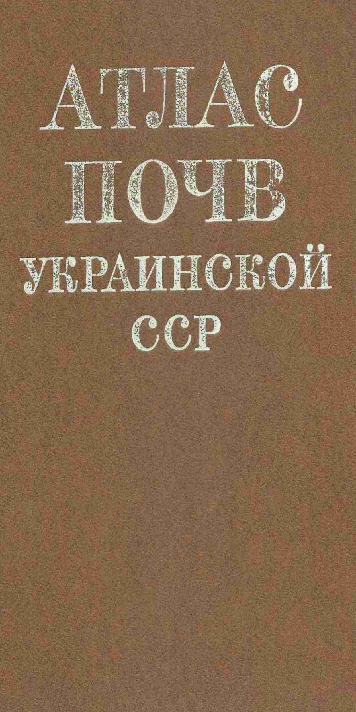

На давньоалюіальних пісках (1)
На водно-льодовикових пісках (6)
На водно-льодовикових суглинках (4)
На водно-льодовикових супісках (1)
На морені (1)
На озерних суглинках (1)
Торф (2)
На лесах (17)
На лесовидних суглинках (8)
На оглеєних лесах (4)
Мочарні (1)
На елювії крейдяних порід (1)
На елювії глинистих сланців (4)
На елювії піщанистих сланців (2)
На елювії піщаників (1)
На елювії сланців (1)
На червоноколірних глинах (1)
На засолених палеогенових глинах (1)
На елюво-делювії дрібнозернистого піщаника (1)
На елюво-делювії андезито базальтів (2)
На делювіальних суглинках (3)
На давніх озерно-алювіальних відкладах (1)
На давньому глинистому делювії (1)
На делювії вапняків (1)

Атлас грунтів Української РСР Крупський М.К. Полупан Н.І.

1 a. Дернові глинисто-піщані ґрунти на давньоалювіальних пісках

1 b. Дерново-слабкопідзолисті глинисто-піщані ґрунти на водно-льодовикових пісках

2 a. Дерново-слабкопідзолисті глинисто-піщані ґрунти на водно-льодовикових пісках, прошарованих мореной

2 b. Дерново-слабкопідзолисті супіщані ґрунти на шаруватих водно-льодовикових пісках

3 a. Дерново-середньопідзолисті глинисто-піщані ґрунти на водно-льодовикових пісках

3 b. Дерново-середньопідзолисті супіщані ґрунти на шаруватих водно-льодовикових пісках

4. Дерново-середньопідзолисті легкосуглинисті ґрунти на водно-льодовикових суглинках, підстилаємих шаруватими пісками

5. Дерново-середньопідзолисті легкосуглинсті ґрунти на морені

6. Підзолисто-дернові легкосуглинисті ґрунти на озерних суглинках

7 a. Дерново-слабкопідзолисті глеюваті глинисто-піщані ґрунти на водно-льодовикових пісках

7 b. Дерново-середньопідзолисті глеюваті легкосуглинисті ґрунти на водно-льодовикових суглинках

8.Дерново-середньопідзолисті глейові супіщані ґрунти на водно-льодовикових супісках

9. Дерново-карбонатні ґрунти на елювії крейдяних порід

10. Дернові глеюваті легкосуглинисті ґрунти на водно-льодовикових суглинках

11. Дернові глейові легкосуглинисті ґрунти на водно-льодовикових суглинках

12. Торф'яники низинні солончакові

13. Світло-сірі опідзолені ґрунти на лесах

14. Сірі опідзолені ґрунти на лесах

15. Темно-сірі опідзолені ґрунти на лесах

16. Чорноземи опідзолені на лесах

17. Темно-сірі реградовані ґрунти на лесах

18. Чорноземи реградовані на лесах

19. Чорноземи типові глибокі малогумусні на лесах

20. Чорноземи типові вологі глибокі малогумусні на лесовидних суглинках

21. Чорноземи типові глибокі середньогумусні на лесах

22. Лучно-чорноземні ґрунти на лесовидних суглинках

23. Лучно-чорноземні глибоко-середньосолонцюваті солончакові ґрунти на лесовидних суглинках

24. Лучно-чорноземні поверхнево слабкосолнцюваті содово-солончакові ґрунти на лесовидних суглинках
_ґрунти_на_лесовидних_суглинках.jpg)
25. Лучно-чорноземні осолоділі (западинні) ґрунти на лесовидних суглинках

26. Лучно-чорноземні солонцюваті солончакові мочарні ґрунти

27. Солонці лучно-чорноземні коркові стовбчасті солончакові на лесовидних суглинках

28. Солонці лучно-чорноземні глибокі стобчасті солончакуваті на лесовидних суглинах

29. Лучні суглинисті ґрунти на лесовидних суглинках

30. Лучні поверхнево солонцюваті суглинисті ґрунти на алювіальних відкладах

31. Лучно-болотні солонцюваті солончакові суглинисті ґрунти на алювіальних відкладах

32. Болотні солонцюваті солончакові суглинисті ґрунти на алювіальних відкладах

33. Торф'яно-болотні солончакові грунти

34. Чорноземи звичайні глибокі середньогумусні на лесах

35. Чорноземи звичайні глибокі малогумусні на лесах

36. Чорноземи звичайні середньоглибокі малогумусні на лесах

37. Чорноземи на елювії глинистих сланців

38. Чорноземи на елювії піщанистих сланців

39. Чорноземи на елювії піщаників

40. Чорноземи на червоноколірних глинах

41. Чорноземи сильносолонюцваті солончакові на засолених палеогенових глинах

42 a. Чорноземи короткопрофільні на елювії глинистих сланців

42 b. Чорноземи короткопрофільні на елювії піщанистих сланців

43. Чорноземи південні на лесах

44. Чорноземи південні міцелярно-карбонтані на лесах
_на_лесах.jpg)
45. Темно-каштанові солонцюваті ґрунти (цілинні) на лесах
_на_лесах.jpg)
46. Темно-каштанові солонцюваті ґрунти (орні) на лесах

47. Каштанові солонцюваті ґрунти на лесах

48. Солонці каштанові середні на лесах

49. Лучно-чорноземні поверхнево глеєві слабкоосолоділі ґрунти на оглеєних лесах

50. Дернові поверхнево глеєві осолоділі ґрунти на оглеєних лесах
_на_оглеєних_лесах.jpg)
51. Глеєві сильно осолоділі ґрунти (глеє-солоді) на оглеєних лесах

52. Дернові глеєві солончакові ґрунти на оглеєних лесах

53. Буроземи кислі високогумусні холодного поясу на елюво-делювії дрібнозернистого піщаника

54. Буроземи кислі середньогумусні помірно холодного поясу на елювії сланців

55. Буроземи кислі малогумусні теплого поясу на елюво-делювії андезито базальтів, що підстилаються переміщеною червоноколірною корою вивітрювання

56. Дерново-буроземні кислі ґрунти на елюво-делювії андезито базальтів

57. Підзолисто буроземні кислі поверхнево глеюваті ґрунти на делювіальних суглинках

58. Підзолисто буроземні кислі поверхнево глеєві ґрунти на делювіальних суглинках

59. Бурувато-підзолисті кислі поверхнево глеєві ґрунти на делювіальних суглинках

60. Лучно-буроземні кислі слабкоглеє-елювійовані ґрунти на давніх озерно-алювіальних відкладах

61. Чорноземи звичайні міцелярно-карбонатні передгірські на давньому глинистому делювії

62. Буроземи слабкоопідзолені на елювії глинистих сланців

63. Коричневі ґрунти сухих лісів та чагарників на елювії глинистих сланців

64. Червоно-коричневі ґрунти сухих лісів та чагарників на делювії вапняків
This is the first soil profile